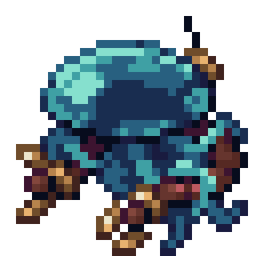

Hi, my name is Lucretia Greville(24408581) and I am a student going to UL. This blog is meant to act as my dev diary for my group's project as part of our CS4043 game design module. The project so far is a 2D roguelike turn based game that takes place in the ocean, I nominated myself as the as the sound designer as well as composer along with Mykhailo who will also be composing the music. I'm somewhat familiar with GarageBand on IOS so I will likely end up using that for the some of game's music and sound effects. Below are a few demo tracks I made to try and capture the feeling the game is going for, to try and sound sombre, depressing and also fit the sci-fi marine setting. They're really experimental as I'm still learning how to use GarageBand and nowhere good enough to be in the game but making them has been great experience. The first demo may be used for the titlescreen, it has the feel of an old gameboy game starting music to me.
The second demo is meant to be much more oppressive sounding than the first and may be used in a scene where we enter the final zone of the game.
Hi, we've started to get a gist for what the vibe the game is going for is like which really helps when it comes to sound design. We have a general sense for the plot that it takes place under the ocean in a cyberpunk future and the main character is sent down into the ocean to defeat a previously created robot that gained a will of its own(The storywriter Caoimhe could exaplain it much better). We've decide on using Godot as the game engine and our programming team has started coding some of the elements in the game. Our artwork team has started making designs for the enemies and main characters. I've made a demo for music that may play during a possible upgrade portion of the game or where the player makes some choice over elements of their character's abilities.
Then I was able to finalise the demo into a state where I'm happy enough to call it basically finished unless I go back and refine it a bit more.
I've also made started making another possible title screen music unless we can find somewhere else it works better. These are the opening notes of it.
Lastly I've started to work on sound design of some enemy sounds that a robotic enemy might make during a battle. My hope is that I'll be given a list of sound effects I need to make from the artwork or other teams.
Hi, its been a slower week in terms of development but our team is still making progress. Mykhailo has been making some really good music for the game using FL Studio, and our programming team has started coding some of the game systems. The art team has been making some rough drafts for enemies and some level design ideas. I currently don't have much to work with until we have actual designs made for the game yet, but when some designs are finalised for enemies and levels I can use those for inspiration. I've made another song demo that is in a state where I think its in a good state and basically finished unless I go back and refine it like the other demo.
While I'm waiting for sound effects to make I tried making footstep sound effects for an enemy you may fight during the facility section of the game.
Hi, its been a much more productive week for the project. We have path tracing (without enemies getting stuck on walls) and we've done a lot of work in the combat system. In the last week I was able to make two new songs for the game that are in the same state as the other two I've made, my current plan is to make maybe one more song demo until we need music for specific moments and then spend next week refining and tightening up all the music I've made so far until they're all in a finalised state. I've also become way more comfortable with garageband and I've found a bunch of editing tools it has that has made making music much easier than it was at first. This first demo I feel like could be another theme used while exploring but feels a bit more upbeat than the other demos I've made so we may use it in the first area of the game as the plan seems to be for the game to take on a more dark tone the further the player progresses.
I'm really happy with how this second demo came out, it hits the oceanic feel I've been trying to go for with my other demos in a way I really like. The same with the other demo I made it seems a bit upbeat so it may be used earlier on in the game.
Hi, I was able to get a bit done this week. I revised 3 of the current demos I made into final demos which with approval from my team I think I can add directly to to the game assets on github. An issue I realised this week with how I have been saving sound files is that I have been converting my files from wav to mp3 as I listen to the demos on my phone and my phone is weird about playing wav files, but when I was playing the demos on my dev diary to see what to revise I found out they sound much different to me than the original wav files. So from now I'll be saving them on my diary as wav, I knew there was a loss of data in the conversation but I had no idea it was that big. I also made 2 more demos, for most of my demos I've kept them pretty basic just using scales and some editing to keep them easy on the ear to listen to, the idea is that if they're on loop while you play the game I don't want the player to become annoyed by the music, and for the first demo I did just that again but with a more action feel to it.
As opposed to that I tried to make something thats more complex that could be used at a story section of the game. Its not done yet but I thought I should include the beginning part of it in this weeks entry.
These are the rest of the revised demos, I only tweaked them a little bit to sound better and there's a chance they'll just sound identical from the last version to people.
Hi there, so I didn't make a post last week since I wasn't finished stuff and I'd be talking about it this week too so I decided to make just a big diary entry. So I've started making sound effects for the game after being given a list by my team, I used Adobe Audition to make the effects since I heard good things about it from a friend. All these sound effects I recorded at home using my basic headphones as a microphone but I want to re-record all these sounds in the Glucksman library recording booth once I've done the training on how to use it.
For the player I made a sound effect of them moving, since the game is in the ocean I tried to make their walking sound as underwater as I could. I recorded this by filling my sink with water and plugging the drain, then just recording my hand moving back and forth in the still water. Then in post I added effects to make it sound more echo-y and give it some light reverb, I also added a gap in the middle as I felt like the back and forth of the water came too quickly after each other. Next I made the effect of the player's laser and harpoon attack, they were much easier to make as the laser is just a single note from a keyboard in GarageBand and the harpoon sound effect is the sound of two knives clashing against each other with some effects on top giving it some reverb and other small stuff.
For the enemy jellyfish I made the sound of them swimming through water by literally recording myself say "wiisshh wasshhhh" with a filter over it and some extra small edits I applied to other sound effects previously. The jellyfish's current attack is with its claw so I recorded the effect with my mental tongs by clicking them as loud as possible then adding some reverb and shifting its pitch.
Hi, this week I've been trying to experiment more with adobe audition so I spent a decent chunk of the week making a lot of sound effects that sound actively bad but did teach me a lot, like how distortion can effect sounds and how to compress sound by saving it at a lower sample rate and bit depth can make audio sound more 8-bit like how audio in older video games was compressed to save memory. The programmers in our team this week made this. After discussing with the game design team how the player travels from one area to another they'll move from area to area by jumping down holes to descend or use doors. The door sound is courtesy of Adam Kennedy in our group who I got to say "Hooosh" and applied the analog delay preset "robot voice" to which sounded a lot like what I had in mind for the door as a mechanical automatic door that hasn't been used in years. I also applied some more effects to the modulation of the audio and copied small sections of the audio and pasted them at a random place in the middle which made it sound far more mechnical and less like speech. For the jumping into a hole sound effect I took the second half of the player moving sound effect and applied the analog delay preset "triple refrain" along with some other small effects to it. The idea is that as the player jumps down the echo conveys how much they have descended as the enter the next level.
Next I made the sound effects for the spider enemy of them attacking the player by biting them and by shooting a laser projectile. The biting sound effect is the sound of an apple slice being split in half as it makes a nice crunch sound effect with a bit of a wetness to it, I considered recording myself or someone pretending to or actually biting into something but that just felt like it would be weird to record. In the pitch shifter I slightly raised the semi tone and turned the cents all the way down. For the laser sound effect it was very simple to do in GarageBand like the laser sound effect, I played a key in the punchy filter bass keyboard and applied some other small effects to it to make it sound more artificial. Next week I want to make the sound effects of the spider walking and the other idea we had for an attack for them of them shooting a web.
Hi, this week I've just been finishing the work I was meant to get done last week. Firstly I made some basic UI sound effects when you do stuff like enter or exit a menu or click an option in the settings, whenever you activate the sound effect again the idea is that it'll play a different key so it sounds more alive and less stale. I made it in gargaeband using the cosmic teardrops keyboard because I wanted it to sound more melodical without actually making it a song, I was hoping it would sound ethereal and fit in with the whole sci-fi underwater vibe I keep mentioning. After talking to our level designers they were talking about a flashlight mechanic so I made the sound effect of turning it on and off in the level, theres no current implementation of the flashlight outside of level design so I wasn't sure if it was going to be more of a lantern or basic flashlight so I leaned into a more basic flashlight that sounds more mechanical direction. To make it I tried using a real flashlight but the button was rubber so it sounded way too soft than what I was going for, what I ended up using was an old laser pointer we got for our cat almost a decade ago. Because the pointer was all metal and kind of old it gave the click sound of it a more mechanical sense which was perfect, in adobe audition I removed all the background noise and lowered the cents in the pitch shifter all the way to -100.
To finish off the spider enemy sound effects I was making last week I made a walking and web shooting sound effect for it. The web shooting sound effect doesn't sound as good as I wanted it to but after struggling for a while on how to make the sound for it I had in mind I went with just saying "pssh" into my mic and hoping that effects would make that less obvious. I increased the corus of the effect to 4 voices to make sound more weighty if that makes sense, and I used automatic pitch correction to make it sound more coherent and higher pitched. For the walking sound effect I knew I wanted to tap something 3 times back to back to simulate a pair of legs moving but debated on what would be making the sound, I was going to use a pencil but that sounded too light and a pen sounded too heavy and what would I even be tapping them against. What I ended up doing was tapping my finger against a plastic coin on my desk, my finger would sound weighty but the plastic coin made it feel lighter. In adobe audition I gave it some reverb and increased the amount of voices it had in its chorus which I feel made it sound less human in the way it walked. I then copied and pasted the first 3 steps of it walking and reversed it for the other 3 legs which I felt like gave the walking sound a nice conclusion and made it sound more unnatural in a good way because its not a real spider its a robotic creation of one.
Hi, since the game dev project is due soon this week has been incredibly productive for the team as the pressure settles in to try and get the game as done as possible while realizing that our scope for the game was incredibly ambitious. I'll talk about what I've gotten done since the last entry and what I'm working on currently as I got a lot of progress made but most of the stuff I did isn't finished yet. Firstly I had to recommit all the stuff I made in GarageBand because for some reason I would save it in a wav format but when I downloaded it to my laptop it was a mov file. I didn't even realise this was the case until I committed the files to the github and Mykhailo asked me to recommit them as wav files because Godot does not like mov files. I also finally after I kept forgetting to do it did the induction for media production labs in the Glucksman library so that I could record stuff in the audio labs. It was honestly way easier to use than I assumed, the only issue was I had to record stuff on the computer there, save it on a USB stick and then edit it on my laptop with the USB data, I couldn't just plug my laptop into the setup. The programming team (mostly Mykhailo) has been doing a lot of work on the jellyfish enemy so I made some more sound effects for it, I made the sound of it taking damage, dying and its electric attack since we gave up on its claw attack.
The jellyfish taking damage was a very similar process to its swimming sound effect, I recorded a quicker version of me saying "wish" like before and used an edited version of the chorus preset chaos pits like before to give it that non-human sound but also used the pitch shifter to deepen the semi tones to -5 to try and make it sound a little more deep, then finally got rid of background noise with the denoise effect. The idea was to do something like when a zombie takes damage in Minecraft to be a quick reaction noise of pain from being hit. Next I did the sound of the jellyfish dying, I recorded me saying "Wsshhshs" to sound like it was deflating and giving out one last squel before it died, like the sound of it walking and taking damage I used an edited version of the chorus preset chaos pits and removed background audio, I did also add some delay to it so it sounded more like it was deflating and giving up before passing away. The last effect I finished this week was the sound of the jellyfish's electric attack, since it was an attack that left the area eletrcified after its used I wanted it to sound more like an eletrcic buzzer for flies than a quick zap noise. I recorded me saying "bzzzzzt" and after removing the background noises I edited the sound using the guitar flange effect and found out setting the modulation rate to 1.5 Hz it sounded really electric and sounded less like me saying the word "buzz". I also was able to record a lot of lines from Pedro on our team of sound effects I had in mind that I wanted to work on later, this included the player taking damage, dying, a new version of the harpoon effect, some weapon effects (we may or may not get to adding to the game) of daggers you would throw, a trident, a sword slashing, also picking up audio logs that the player can find and the talking sound of the audio log, and lastly some sounds a swordfish enemy might make. Here's the current sound that plays when the player dies courtesy again of Pedro.
Hi, this is my last entry detailing my work on the game my next entry will be my reflection on my dev diary as a whole and will have the link to the games itch.io page. So like I mentioned in the last entry I recorded a bunch of sound effects with Pedro and some on my own using the audio labs in the Glucksman library, since theres a lot of effects I made I'll do a quick summary for all of them. There is also a lot of sound effects I made for things we never implemented into the game if you wonder why I talk about an enemy or weapon we never made, I made all of these with the mindset of the game we would make if we had enough time to do everything we planned on.
For the flashlight fx I re-recorded it and made it a bit more basic so that the sound wouldn't come off as too annoying, I decreased its cents in the pitch shifter to -100 and set its flange to a light flange. For the audio log pickup I recoreded Pedro making a "pling" sound and in the middle of the recording his laptop made a beep which incidentally made for a good noise for the player sort of downloading the audio log data, I removed background noise, applied a robotic voice analog delay, set the chorus to the preset tiny pebble and set the flanger to the preset robotic. For the audio log talking I re-used the downloading sound from the pickup to give it the sense that the player was activating the download, for what Pedro's saying its apparently a poem in Latin he found. My hope with the audio log talking sound would be that its like when villagers speak in Animal Crossing how they make sounds that resemble sentences but aren't decipherable as actual sentences by the player, the Latin works in the end as that since the effects make it hard to make out the words. I removed the background audio from it, applied the analog delay preset robotic voice and robotic preset for the flanger like before as they're both great for robotic sounding stuff, and lastly I copied and pasted a syllable at the end of each section of the audio a few times over to make it seem like the recording is repeating itself like how it might when using old tech like VHS tapes. For throwing daggers I got Pedro to say "Hoo" then sped up the audio adjusted the chorus to sound more like the sound is in motion and adjusted its flange to a light flange.
For the player damage I wanted it to sound more elctrical and mechanical since its a drone and not a person so I got Pedro to say "Kssh", adjusted the guitar suite to sound like an old tin can telephone and applied a robotic flanger. For the player dying I wanted it to sound like an explosion of the drone so I recored Pedro saying "Booooh", I gave it a heavy chorus adjusted the graphic phase shifter by 90 degrees, and gave it the FFT filter of a cassette tape. For the harpoon sound I wanted it to have a quick "hooo" of the player throwing the harpoon and then a "kck" of the metal of the harpoon hitting something. I gave it an adjusted light flanger used the guitar suite to make it sound more metallic, and used the chorus to give it a more in motion sound like with the throwing daggers.
For the swordfish taking damage sound I recorded Pedro saying a "Quuuaaa" for the swordfish screaming in pain from being hit, I gave it -40 semi tones to sound slightly deeper and made the chorus sound more wave-y. For the swordfish dying I recorded Pedro saying a "Kerraaaa" sound deflatingly as the swordfish dies, I gave it a -40 semi tones to sound slightly deeper like before and made the chorus much more wave-y to help with the deflating effect. For the swordfish's dash attack with its noise I wanted to highlight the sound of the water being pushed aside in the motion of the swordfish dashing, I recorded Pedro saying "Pwssh" and increased its semi tones to 3 to give it a higher pitch and also gave it a light flanger. Lastly for the sound of the sword attack I recorded myself saying "Wooosh" and gave ot the pitch shifter preset deathly ill to make it sound more heavy, gave it a light flanger and sped up the audio by 120% to sound more quick and action-y.
Hi this is the reflection on my entire dev diary to see what I learned overcame and dealt with in my entries, you can access the game here on itch.io(----).
This is my first time working on a game and even really working on audio so I learned a lot in my time on the game, I learned how to use Adobe Audition, GarageBand, and a lot of file formatting and technical stuff when it comes to audio files. GarageBand I had some vague familiarity with before we started the project from trying to make music for a DND campaign I ran years ago, I have utterly no musical knowledge or experience so in my time composing for the game was very vibes based and not music theory based. I learned how to layer instruments in GarageBand, edit individual instruments, and edit specific notes in songs. I ended up mainly making basic scales up and down keyboards in different keyboards and the layering another keyboard with it that sounds nice paired with it. I did try and compose actual pieces for a while but I couldn't make anything that sounded that nice and didn't feel as much of a need to with the other songs I made covering the background music. I had no experience with Adobe Audition before I used it and mainly taught myself how to use it by messing around and experimenting in it, a lot of the stuff I made in it was bad but also taught me loads about how to use Audition. By the end of the project I knew what effects I'd need to apply based on what I was trying to do and my learning process on how I got to that point was like I said above just messing around until I made something I sort of liked and then editing that effect until it was exactly what I wanted it to sound like. It was easier to do it with some effects compared to others, if I knew what I wanted it to sound like and if I did something similar before it was much quicker than something I had no idea with. Because of that some effects took me hours to be satisfied with like with the harpoon attack, some that I had more of an idea with could take me half an hour like with all the jellyish sound effects and some I got instantly by the luck of the gods and took me 5 minutes like with the electricity sound effect. Adding audio files to github and adding them to my dev diary taught me a lot about how to handle audio files and manipulate them like when I learned that using mp3 files instead of wav files is a bad idea as it ruins the quality of the audio.
Like I mentioned in what I learned I had an issue in quality loss using mp3 files instead of wav files as I couldn't open wav files on mobile and thought it wasn't a huge difference, I only noticed when playing back the stuff on my dev diary that it sounded much different than it initially did. Another issue relating to that, that I wasn't able to solve was making my dev diary mobile compatible as I was trying to get feedback from my friends on stuff so I edited its HTML code to fit a mobile device and changed the audio to mp3 files so that they could access my dev diary on their phones. But after I converted everything back to wav files they were no longer able to play the audio on their phones so I could only get feedback from them in person. Another big issue I had was the lack of direction I had, no one was telling what to do which in one way was nice to have the freedom but also was an issue because I had to chase people down and have them tell me what sound effects we might need for potential enemies and weapons. And when I did have a list that I made of stuff to do I had no direction on what the sound effects should sound like so I did struggle in points on effects because I had no idea what to do with them and almost no help on creating them outside of the recordings I did of my friends for some effects. Because of that some weeks I didn't have a clear idea of what I should try and get done.
I think I might've mentioned this somewhere above but my main inspiration for the games music sound design came from a podcast called "The Adventure Zone", its a dungeons and dragons podcast that I love but in particular it has phenomenal music composed by Griffin Mcelroy. A big reason why this inspired me was because Griffin for the most part self taught himself how to compose music in GarageBand and in the process of making the games music it has given me a much bigger appreciation to all that went into the music for that podcast. Another big reason why that podcast inspired me was because it has one underwater sci-fi season that perfectly fit the vibe for our game so I used similar keyboards compared to what was used in that season's soundtrack. For the sound design of sound effects two games that I took a lot of inspiration from were Nier Automata and Outerwilds, Outerwilds is a mystery based space exploration game to oversimplify it but the sound design for the spaceshape and the items you use in the game helped me have an idea of how I wanted things like the flashlight or even how the enemies would sound(especially the jellyfish). Nier Automata is harder to summarise but basically in it you fight a lot of robots as enemies while playing as an android and that gave me a much better idea of how anything thats robotic should sound like the player or the audio logs or even the door shutter, it also helped a lot with how weapons should sound as the game has a lot of similar weapons in it to the ones we also chose for the game.